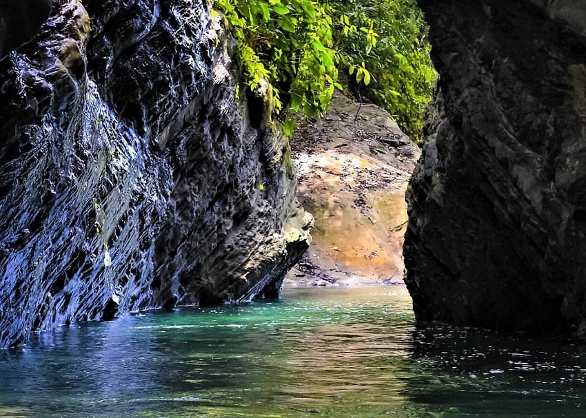

1.Pantai Pasar Bawah
Pantai Pasar Bawah merupakan ikon wisata Bengkulu Selatan. Berlokasi dekat dengan pusat kota Manna, daya tarik utamanya adalah panorama indah dan spot foto yang menakjubkan. terletak di Desa Pasar Bawah, Kecamatan Pasar Manna, Kabupaten Bengkulu Selatan, Provinsi Bengkulu
2.Taman Merdeka
Terletak di pusat Kota Manna, taman ini menjadi tempat favorit masyarakat untuk bersantai, terutama pada sore hingga malam hari. Beragam penjual makanan dan minuman juga memenuhi area taman ini. Lokasi Jl. Diponegoro No.6, Kp. Baru, Kec. Kota Manna, Kabupaten Bengkulu Selatan, Bengkulu 38511
3.Wisata Alam Sekunyit
Terletak di Dusun Suka Mulia, wisata ini menawarkan pemandangan pantai yang memikat, disertai dengan fasilitas bersantai dan tempat makan. Spot foto yang menarik seperti sebuah kastil membuat pengalaman berkunjung semakin berkesan. berlokasi di Dusun Suka Mulia, Desa Pagar Dewa, Kecamatan Kota Manna, Kabupaten Bengkulu Selatan.
4.Bendungan Air Nipis
Terletak di Desa Sukarami, tempat ini menawarkan pemandangan sawah yang menyejukkan mata. Wisata ini tidak hanya menyenangkan untuk bermain air, tetapi juga untuk menikmati keindahan alam sekitar. Lokasi J349+8P5, Palak Bengkerung, Kec. Air Nipis, Kabupaten Bengkulu Selatan, Bengkulu 38511
5.Tebat Rukish
Menawarkan ketenangan di sekitar Masjid Rukis, tempat ini memiliki jembatan yang menjadi spot foto favorit. Pengunjung dapat menikmati keindahan alam sekitar dengan suasana yang damai. Lokasi Jl. Jenderal Ahmad Yani No.206, Tj. Mulia, Kec. Ps. Manna, Kabupaten Bengkulu Selatan, Bengkulu 38511
6.Sepit Kancil
Bagi penggemar wisata alam, tempat ini menawarkan pemandangan alam yang indah dan kolam air sejuk yang cocok untuk berenang di alam terbuka. Lokasi M49R+VJC, Sukarami, Kec. Air Nipis, Kabupaten Bengkulu Selatan, Bengkulu 38553
7.Meriam Honisuit
Sebagai destinasi sejarah, Meriam Honisuit adalah senjata buatan Inggris yang membawa sejarah saat Jepang menjajah Bengkulu Selatan. Terletak di Pagar Dewa, wisata ini menyajikan pengalaman bersejarah yang menarik.